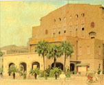

呂清夫 撰文

這個時代常見是非不明，近日又見美醜混同，據各報近日報導，為了「美化」台大醫院周邊，有位環境工程專家建議市政府，要把附近大路上的行道樹移走，並說這些樹是「壞樹」，要改種更美的樹。建議移走的榕樹（市樹）在中山南路便有一百六十餘棵，在徐州街則是高達七、八公尺的成齡樹木。面對此事，我們有不同的看法，因為當初這些「壞樹」不也是經專家的規畫才種的嗎？如果斷定這樣種成的樹是「壞樹」，那麼當初的規畫又算什麼？茹果每隔幾年就有人來改種前人的樹木，那麼台北市民不是旱永無遮蔭了嗎？由為改種樹木不比改建房子，種好了還要等上十年八年，才有遮蔭。這裡面的問題大概出在「美化」上面，究竟「美」的標準在哪襄？市政府都計處與公園處都認為行道樹有其調和街景等效益，沒有道理為配合美化計畫，反而犧牲這也這些路樹。這種說法我想必然言之成理，因為童山濯濯的水泥叢林不知有何美感可言？有何景觀可言？故憑常識而言，「犧牲路樹」除了著眼於施工方便、開車方便等工程因素之外，不知與「美化」有哪些關係？不知有哪些研究美的人士認同這種「美化」？近代的華人把經濟看得高於一切。據電視報導，加拿大很歡迎香港人去那邊投資，但是很不歡迎香港人做他們的鄰居，因為一有港人住在隔壁，便會大興土木，樹木便會遭殃，大家寧可蓋房子，也不要種樹木，加拿太人認為這樣會降低生活的品質。只是不知港人會不會認為這也是一種「美化」？在台灣，「美化」一詞似被用得有點浮濫，我們絕無意思在用詞上鑽牛角尖，只是大家如果凡事冠以「美化」，實際上又未必是那麼回事，那麼將會產生一種誤導，以為我們已在從事美的工作，可以交差了，今後不必再把環境弄得美一點，而事實上卻是仍在原地踏步而已。近日市政府好像為了區運，發動了「美化台北‧我的家」運動，基本上我們非常認同此事，同時從字面上看，更覺高興，因為政府也重視了美的工作。可是等到逐日看到媒體的報導之後，發現似乎不是那麼一回事，似乎只不過是一次大掃除運動而已，與「美化」還差了很長很長的距離。當年韓國為了迎接世運會，也發動了美化運動，不過他們的做法是，在世運會開幕的多年之前，便委託漢城大學的藝術系進行景觀設計，雖然規模龐大，但是著眼極細，舉個例說，他們會把高速公路兩旁的房子作一次色彩計畫，然後全部由政府斥資粉刷過一次。至於漢城房子的屋頂，亦同樣全盤作過一次色彩計畫，然後依照計畫，該換的換、該刷的刷。使人們從飛機上、從高樓中所見的漢城，都是那麼的美麗！這才叫做美化，這才能近悅遠來。最近開幕的台北新站據說也充分美化、十分亮麗，只是其大無方，難辨東西南北，常見遊客不知置身何處，常要人工帶路，真是原始之至，我於是想到，政府什麼錢都能花，包括貝聿銘都想請來設計站前廣場。為什麼不請一批美工的好手來設計指標，這些人在學校裏都修過視覺傳達（visual communication）或相關課程，對於指標不但可以設計得很美，而且很實用，因為指標或標誌設計在今天已成了一門專門的學問，它完全建立在視覺心理之上。世運會、火車站等人口流量極大的場所，莫不有一套完整的標幟系統，沒有這套系統，只有幾個小指標，一個笨羅盤，就談不到現代化，貫際上也應付不了現代激增的人口。美工人才也好，研究美的人士也好，有如「無殼蝸牛」一樣，在我們的社會常是被忽略的一群，但是我們不能忽略這一群人的數目相當大，撇開大專美工畢業生不談，據估計，高職具有美工相關科別的學校即有六十家以上，有些高職的美工科每年一開就是十幾班。這麼多的人力如果公共事務不請他們參與，那麼對於大家都是一種損失。談到「美化」一詞，我就想到這批人，但是實際的「美化」工程，似乎都與他們無關。美化美化，多少俗事假汝之名以行！原載1989.9.22.自立早報，收入1994年，呂清夫著「現代都市叢林派」